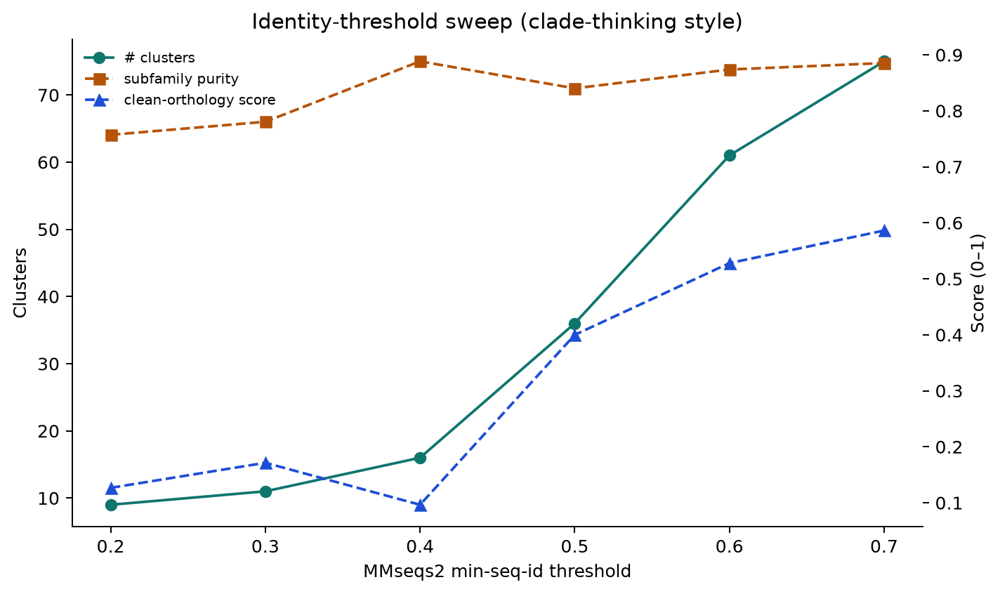
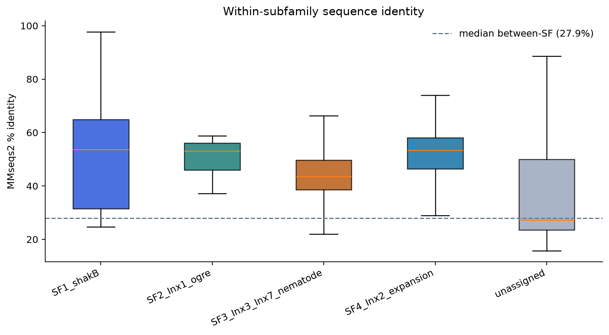
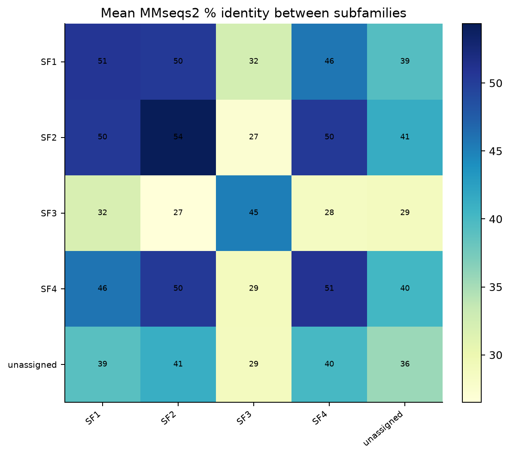
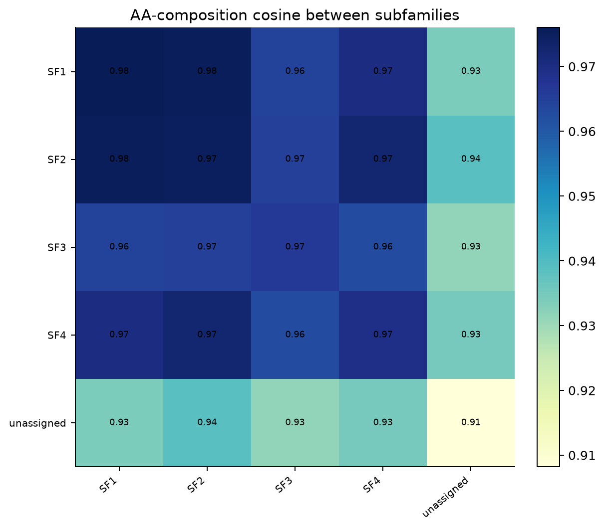
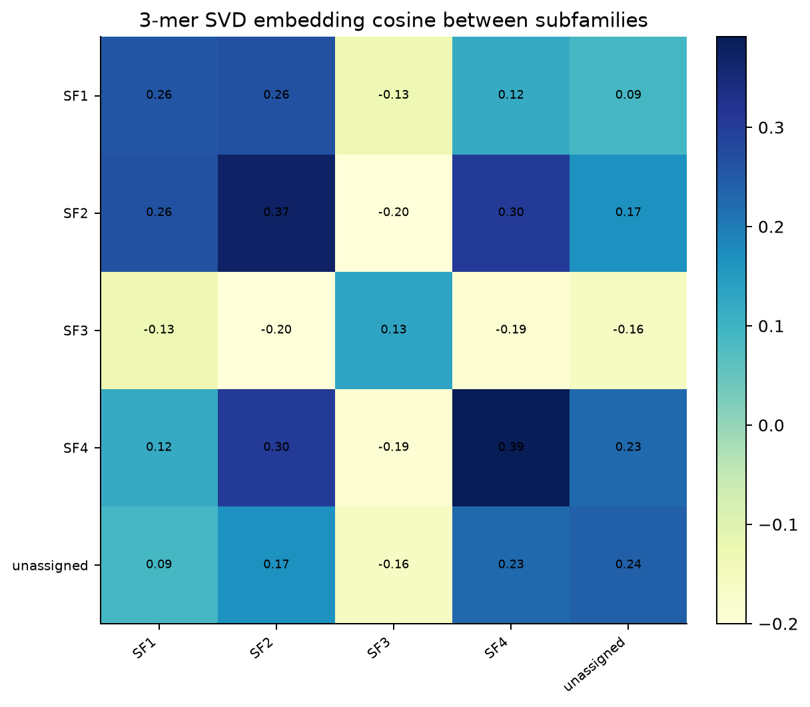
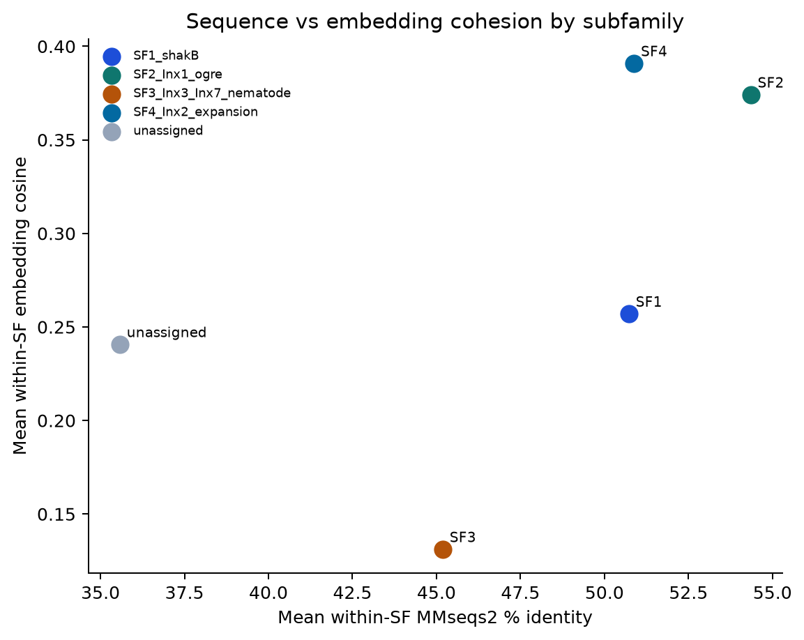
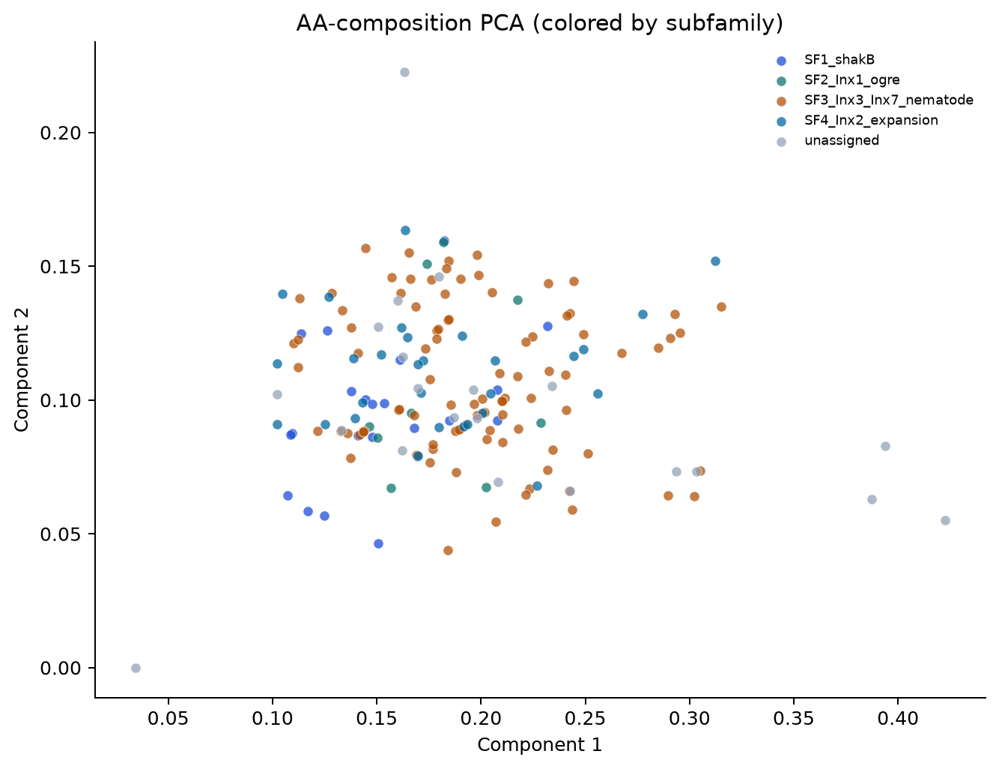

174proteins in all-vs-all
6MMseqs2 identity thresholds
4similarity approaches
Key results
- MMseqs2 sweep: highest mean subfamily purity 0.89 at min-seq-id=0.40 (16 clusters).
- Within-subfamily median identity ~46.2% vs between-subfamily median 27.9% — groups are sequence-separable but still one family.
- 3-mer embedding cosine: same-subfamily mean 0.279 vs different-subfamily 0.049.
- AA-composition cosine is weaker at separating groups (same 0.959 vs diff 0.955) — composition alone is not enough; k-mers / MMseqs carry more signal.
- mmseqs_pident: SF3↔SF4 mean similarity 28.4782 (n=1702) — tests insect expansion vs nematode-like clade.
- Caveat: curator subfamily labels come from best-hit mapping; treat embedding/MMseqs separation as support for the tree hypothesis, not final orthology.
Diagrams

Within-subfamily sequence identity

Subfamily × subfamily MMseqs2 identity

AA-composition cosine heatmap

3-mer embedding cosine heatmap

3-mer embedding PCA

Sequence vs embedding cohesion

AA-composition PCA
Files
all_innexins.fasta · sequence_metadata.csv · mmseqs_allvsall.m8 · threshold sweep · group similarity matrix · key_findings.md · innexin vs connexin